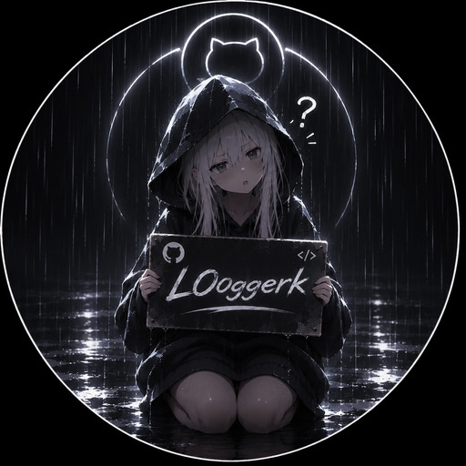

НЕЗАВИСИМЫЙ РАЗРАБОТЧИК И ДИЗАЙНЕРL00 / 2026
Идея — это
только начало.
Я L00ggerk. Разрабатываю приложения на заказ, создаю сайты и проектирую интерфейсы, которыми приятно пользоваться.
01 — 03РАЗРАБОТКА / ВЕБ / ДИЗАЙН
01 / SELECTED EXPLORATIONS
Не слова. Примеры.
Три авторских демо-концепта. Не клиентские заказы — их можно открыть, нажимать и проверять.
02 / WHAT I DO
От замысла к делу.
01
Приложения
Инструменты под задачи, интерфейсы и полезные функции — без лишних усложнений.
02
Сайты
От лаконичных лендингов до многостраничных сайтов. Адаптивно и понятно.
03
Дизайн
UI/UX, визуальные системы, прототипы и решения с характером.

L00 — в процессе создания03 / ABOUT
Хороший продукт
не кричит.
Мне нравится, когда дизайн объясняет себя сам, а код решает реальные задачи. Люблю чистые интерфейсы, внимание к деталям и вещи, которые действительно работают.
L00ggerk.
04 / CONTACT
Есть идея?
↗Открыт к заказам на приложения, сайты и дизайн. Мои контакты можно найти в профиле GitHub.